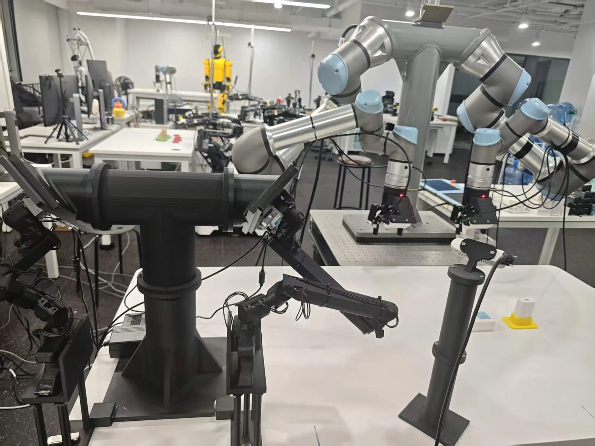
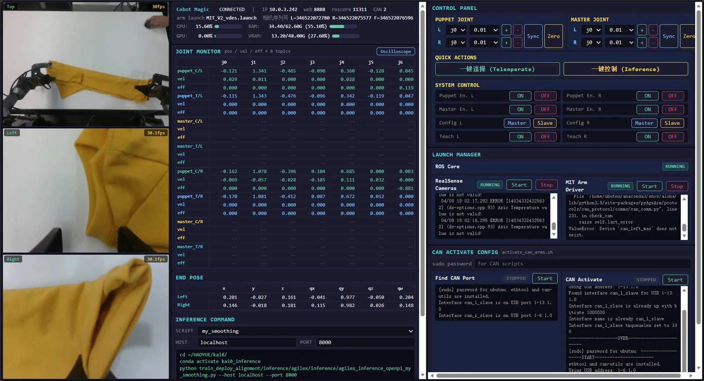
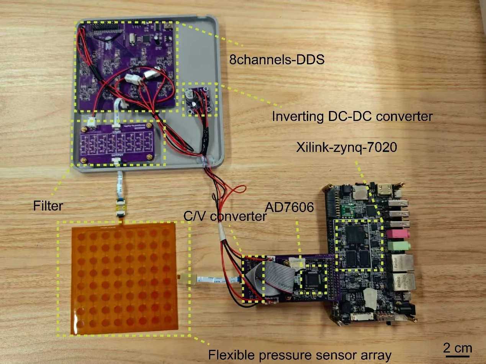
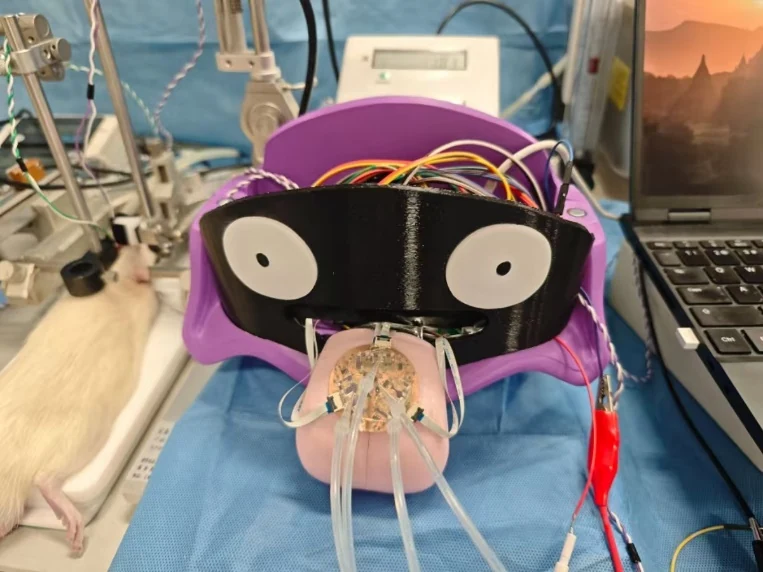
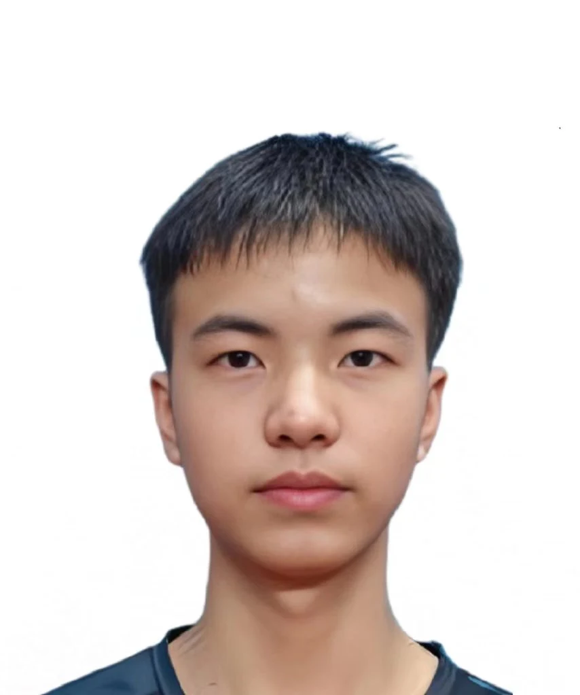
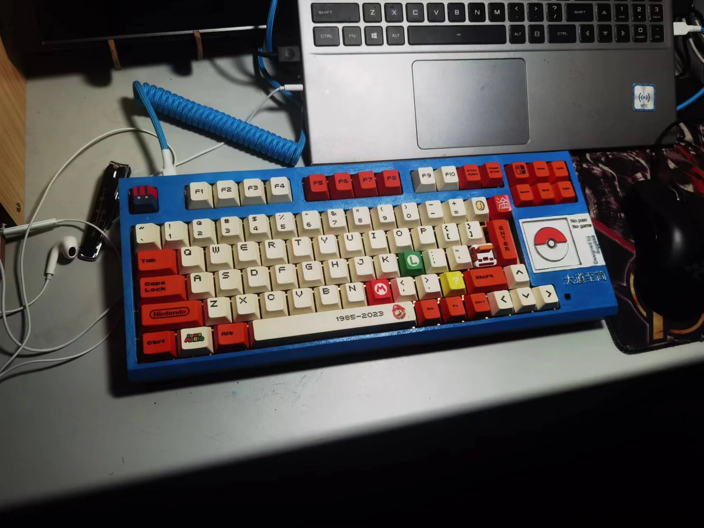

01 — VLA / REAL-TIME INFERENCEICRA 2027 在投 · 第一作者
RSA：让动作跟上此刻
在异步 VLA 返回“过时动作”时，用最新观测与轻量 DiT 纠偏器重新对齐动作，连接大模型推理与实时控制。
~5 msRTX 4090 · 五步纠偏
19/20双臂移动目标任务成功次数
ROBOTICS & EMBODIED INTELLIGENCE
你好，我是吴杰。
探索视觉、语言与动作之间的连接，
让机器人在真实世界里，做得更好。

视觉 · 语言 · 动作Vision–Language–Action
力觉闭环与机器人学习Force-aware Robot Learning
从电路到真机部署Hardware to Real-world Systems
01 / SELECTED WORK
关注真实问题，也关注最后一厘米。
从模型设计到真机实验的完整探索。
在异步 VLA 返回“过时动作”时，用最新观测与轻量 DiT 纠偏器重新对齐动作，连接大模型推理与实时控制。

END-TO-END ENGINEERING
TACTILE INTELLIGENCE从 FPGA 采集到手写运动学解耦，将柔性电子皮肤的信号转化为压力、方向、速度等五维特征。
从电子皮肤系统延伸到独立采集板，完成 PCB 设计及 STM32、FPGA 双端驱动。

连接传感器采集、边缘识别与脑电解码，探索从电子感知到神经通路的闭环。我负责采集电路、边缘识别与脑电算法。
查看 Nature 投稿确认邮件 ↗项目结果来自个人简历与研究材料；论文状态截至 2026 年 9 月，均为在投。
02 / IN THE REAL WORLD
真实平台，真实任务。
一些来自实验室的片段。
03 / THE PERSON BEHIND THE WORK

研究算法，也喜欢亲手造东西。
我是南开大学电子科学与技术专业硕士，研究触觉传感器电路与系统，并在实习中深入视觉语言动作模型与机器人学习。
从画一块 PCB、搭建采集链路，到训练策略、让机器人完成一次真实操作，我享受把每一环连接起来的过程。工作之外，也会做仿生机器人、机械键盘和一些有趣的小装置。
VLA · Flow Matching · DiT · 强化学习 · 长程记忆
真机部署 · 力控 · FPGA / Zynq · STM32 · PCB · 3D 建模
2026.03 — 2026.09
VLA 算法研究员 · 实习
RSA 延迟纠偏、力觉 VLA、π0.5 全栈复现与真机强化学习。
2024.09 — 至今
电子科学与技术 · 硕士 · 推免
电子信息与光学工程学院
导师：徐文涛教授 · GPA 3.56 / 4
2020.09 — 2024.07
电子信息科学与技术 · 本科
专业排名 1 / 60 · GPA 3.73 / 4.5
曾任电子爱好者协会会长

ALWAYS A MAKER
开源键盘、仿生蝴蝶、桌面机器人……
保持好奇，也保持动手的习惯。
OPEN TO OPPORTUNITIES
欢迎交流 VLA、机器人学习、力触觉感知，以及有趣的工程问题。